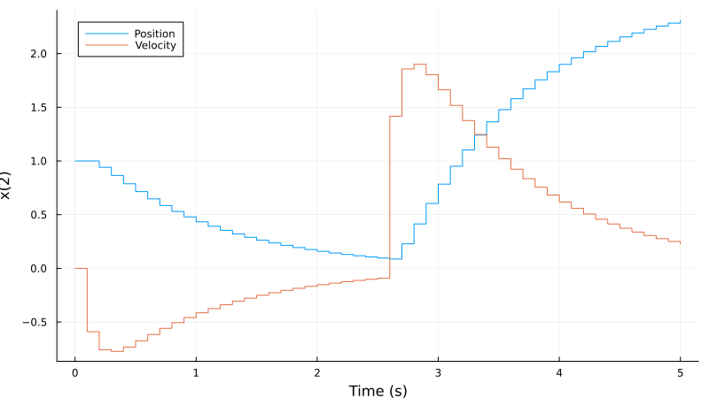
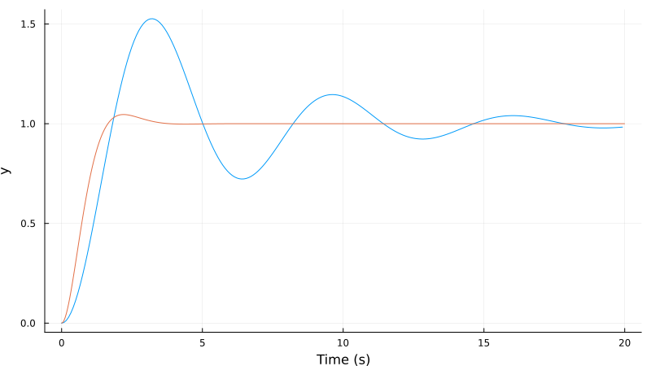
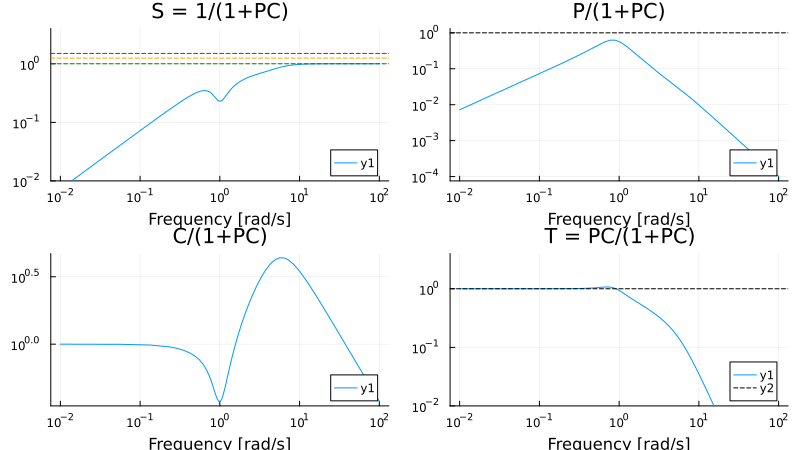

Examples
LQR design
The infinite-horizon LQR controller is derived as the linear state-feedback $u = -Lx$ that minimizes the following quadratic cost function
\[L = \text{arg\;min}_L \int_0^\infty x^T Q x + u^T R u \; dt\]
where $x$ is the state vector and $u$ is the input vector.
The example below performs a simple LQR design for a double integrator in discrete time using the function lqr. In this example, we will use the method of lsim that accepts a function $u(x, t)$ as input. This allows us to easily simulate the system both control input and a disturbance input. For more advanced LQR and LQG design, see the LQGProblem type in RobustAndOptimalControl.
using ControlSystemsBase
using LinearAlgebra # For identity matrix I
using Plots
# Create system
Ts = 0.1
A = [1 Ts; 0 1]
B = [0; 1]
C = [1 0]
sys = ss(A,B,C,0,Ts)
# Design controller
Q = I # Weighting matrix for state
R = I # Weighting matrix for input
L = lqr(Discrete,A,B,Q,R) # lqr(sys,Q,R) can also be used
# Simulation
u(x,t) = -L*x .+ 1.5(t>=2.5) # Form control law (u is a function of t and x), a constant input disturbance is affecting the system from t≧2.5
t = 0:Ts:5 # Time vector
x0 = [1,0] # Initial condition
res = lsim(sys,u,t,x0=x0)
plot(res, lab=["Position" "Velocity"], ploty=false, plotx=true, layout=1, sp=1)
save_docs_plot("lqrplot.svg"); # hide
To design an LQG controller (LQR with a Kalman filter), see the functions
kalmanobserver_controllerLQGProblemtype in RobustAndOptimalControl.
See also the following tutorial video on LQR and LQG design
Pole Placement Design
The example below demonstrates basic pole placement controller design using the same double integrator system from the LQR example. We design a state-feedback controller with desired closed-loop poles and an observer that is 5 times faster than the closed-loop response.
using ControlSystemsBase
using LinearAlgebra
using Plots
# Create system - same as LQR example
Ts = 0.1
A = [1 Ts; 0 1]
B = [0; 1]
C = I(2)
P = ss(A,B,C,0,Ts)
# Design controller using pole placement
# Choose desired closed-loop poles (well-damped, faster than original system)
desired_poles_cont = [-2+0.5im, -2-0.5im] # Continuous-time poles
desired_poles = exp.(Ts .* desired_poles_cont) # Discrete-time poles
# Design state feedback gain using pole placement
L = place(P, desired_poles)
# Design observer with poles 5x faster
observer_poles = exp.(Ts*5 .* desired_poles_cont)
K = place(P, observer_poles, :o) # Note the :o for observer design
# Create controller system
controller = observer_controller(P, L, K)
# Form closed-loop system and analyze
T_cl = feedback(P * controller)
r(x,t) = [1.5(t>=2.5); 0] # Form control law (r is a function of t and x), change reference to 1.5 at t≧2.5
t = 0:Ts:5 # Time vector
x0 = [1.0, 0, 0, 0] # Initial condition (plant state followed by controller state)
res = lsim(T_cl, r, t; x0)
plot(res, lab=["Position" "Velocity"], layout=1, sp=1)Plot Gang of Four to analyze closed-loop properties
gangoffourplot(P, controller)The pole placement design allows direct specification of closed-loop pole locations. The place function computes the required feedback gains, while observer_controller combines the state feedback and observer into a single controller.
PID design functions
A basic PID controller can be constructed using the constructors pid, pid_2dof. In ControlSystems.jl, we often refer to three different formulations of the PID controller, which are defined as
- Standard form: $K_p(1 + \frac{1}{T_i s} + T_ds)$
- Series form: $K_c(1 + \frac{1}{τ_i s})(τ_d s + 1)$
- Parallel form: $K_p + \frac{K_i}{s} + K_d s$
Most functions that construct PID controllers allow the user to select which form to use.
A tutorial on PID design is available here:
The following examples show basic workflows for designing PI/PID controllers.
PI loop shaping example
By plotting the gang of four under unit feedback for the process
\[P(s) = \dfrac{1}{(s + 1)^4}\]
using ControlSystemsBase, Plots
P = tf(1, [1,1])^4
gangoffourplot(P, tf(1))we notice that the sensitivity function is a bit too high around frequencies ω = 0.8 rad/s. Since we want to control the process using a simple PI-controller, we utilize the function loopshapingPI and tell it that we want 60 degrees phase margin at this frequency. The resulting gang of four is plotted for both the constructed controller and for unit feedback.
using ControlSystemsBase, Plots
P = tf(1, [1,1])^4
ωp = 0.8
C,kp,ki,fig = loopshapingPI(P,ωp,phasemargin=60,form=:parallel, doplot=true)
figWe could also consider a situation where we want to create a closed-loop system with the bandwidth ω = 2 rad/s, in which case we would write something like
ωp = 2
C60,kp,ki,fig = loopshapingPI(P,ωp,rl=1,phasemargin=60,form=:standard,doplot=true)
figHere we specify that we want the Nyquist curve L(iω) = P(iω)C(iω) to pass the point |L(iω)| = rl = 1, arg(L(iω)) = -180 + phasemargin = -180 + 60 The gang of four tells us that we can indeed get a very robust and fast controller with this design method, but it will cost us significant control action to double the bandwidth of all four poles.
PID loop shaping
Processes with inertia, like double integrators, require a derivative term in the controller for good results. The function loopshapingPID allows you to specify a point in the Nyquist plane where the loop-transfer function $L(s) = P(s)C(s)$ should be tangent to the circle that denotes $|T| = |\dfrac{PC}{1 + PC}| = M_t$ The tangent point is specified by specifying $M_t$ and the angle $\phi_t$ between the real axis and the tangent point, indicated in the Nyquist plot below.
using ControlSystemsBase, Plots
P = tf(1, [1,0,0]) # A double integrator
Mt = 1.3 # Maximum magnitude of complementary sensitivity
ϕt = 75 # Angle of tangent point
ω = 1 # Frequency at which the specification holds
C, kp, ki, kd, fig = loopshapingPID(P, ω; Mt, ϕt, doplot=true)
figTo get good robustness, we typically aim for a $M_t$ less than 1.5. In general, the smaller $M_t$ we require, the larger the controller gain will be.
Since we are designing a PID controller, we expect a large controller gain for high frequencies. This is generally undesirable for both robustness and noise reasons, and is commonly solved by introducing a lowpass filter in series with the controller. The example below passes the keyword argument Tf=1/20ω to indicate that we want to add a second-order lowpass filter with a cutoff frequency 20 times faster than the design frequency.
Tf = 1/20ω
C, kp, ki, kd, fig, CF = loopshapingPID(P, ω; Mt, ϕt, doplot=true, Tf)
figAs we can see, the addition of the filter increases the high-frequency roll-off in both $T$ and $CS$, which is typically desirable.
To get better control over the filter, it can be pre-designed and supplied to loopshapingPID with the keyword argument F:
F = tf(1, [Tf^2, 2*Tf/sqrt(2), 1])
C, kp, ki, kd, fig, CF = loopshapingPID(P, ω; Mt, ϕt, doplot=true, F)Advanced pole-zero placement
A video tutorial on pole placement is available here:
The following example illustrates how we can perform advanced pole-zero placement using the function rstc (rstd in discrete time). The task is to make the process $P$ a bit faster and damp the poorly damped poles.
Define the process
ζ = 0.2
ω = 1
B = [1]
A = [1, 2ζ*ω, ω^2]
P = tf(B,A)Define the desired closed-loop response, calculate the controller polynomials and simulate the closed-loop system. The design utilizes an observer poles twice as fast as the closed-loop poles. An additional observer pole is added in order to get a casual controller when an integrator is added to the controller.
using ControlSystems
import DSP: conv
# Control design
ζ0 = 0.7
ω0 = 2
Am = [1, 2ζ0*ω0, ω0^2]
Ao = conv(2Am, [1/2, 1]) # Observer polynomial, add extra pole due to the integrator
AR = [1,0] # Force the controller to contain an integrator ( 1/(s+0) )
B⁺ = [1] # The process numerator polynomial can be facored as B = B⁺B⁻ where B⁻ contains the zeros we do not want to cancel (non-minimum phase and poorly damped zeros)
B⁻ = [1]
Bm = conv(B⁺, B⁻) # In this case, keep the entire numerator polynomial of the process
R,S,T = rstc(B⁺,B⁻,A,Bm,Am,Ao,AR) # Calculate the 2-DOF controller polynomials
Gcl = tf(conv(B,T),zpconv(A,R,B,S)) # Form the closed loop polynomial from reference to output, the closed-loop characteristic polynomial is AR + BS, the function zpconv takes care of the polynomial multiplication and makes sure the coefficient vectors are of equal length
plot(step(P, 20))
plot!(step(Gcl, 20)) # Visualize the open and closed loop responses.
save_docs_plot("ppstepplot.svg") # hide
gangoffourplot(P, tf(-S,R)) # Plot the gang of four to check that all transfer functions are OK
save_docs_plot("ppgofplot.svg"); # hide 
Further examples
- See the examples folder as well as the notebooks in ControlExamples.jl.
- See also the paper introducing the toolbox with supplementary material.
- See the docs for RobustAndOptimalControl.jl for additional examples.